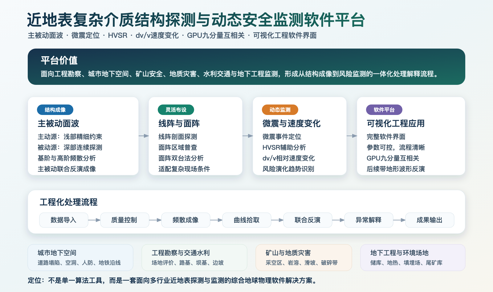

背景噪声与主被动源面波
- 背景噪声互相关与面波提取
- 多尺度、多阶频散分析
- 数据自适应与方位各向异性成像
- 主被动源联合速度结构反演
研究主线：从高密度观测与数据质量控制出发，连接噪声互相关、频散/波形反演、时变监测和工程软件交付。
About
我是刘鑫，现于中国科学技术大学攻读资源与环境工程博士学位。我的研究集中在地震背景噪声面波成像、主被动源联合探测、分布式光纤（DAS）成像和地下介质波速变化监测。
除算法研究外，我也承担工程项目总体设计、处理流程搭建、软件开发和结果解释工作，参与地震预测智能平台、煤矿采空区探测、城市地陷与矿区构造成像等项目。我的目标是将研究代码进一步工程化，使观测、计算、反演和可视化形成可复用的工作流。
Platform Capabilities
Processing Workflow
Application Scenarios
采空区、巷道、断层裂隙、破碎带
地陷、地下管线、轨道交通、施工扰动
大坝渗漏、地下水、边坡与滑坡
台网处理、活动断层、试验场与智能分析
Capability Map
从高密度地震和光纤观测出发，通过数据质控、噪声互相关、频散/波形反演和时变监测，最终形成可解释、可复核、可交付的软件与工程成果。

Research Foundation
Ph.D. candidate in Resources and Environmental Engineering; research on ambient-noise seismology, surface-wave tomography and subsurface imaging.
Master's degree at the Jackson School of Geosciences; thesis research on predicting subsurface stress from seismic data.
Bachelor's and master's training in exploration geophysics and geological engineering, with a focus on seismic wavefield modeling.
Contact
如需讨论背景噪声成像、DAS、主被动源联合探测、地下介质动态监测或地震学软件系统，可通过 LinkedIn 联系，并通过 ORCID 与 GitHub 查看公开学术和代码记录。